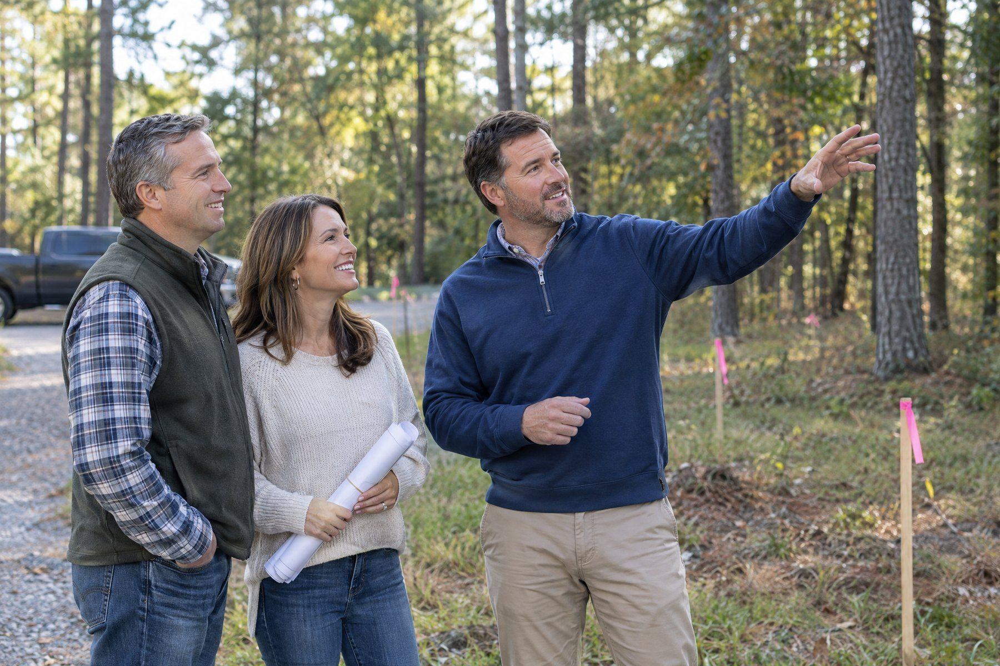

Step 01 · Let’s talk
Every great space begins with a conversation.
We start with you: how you want to live or work, what inspires you, what is not working today, and what matters most. We also talk candidly about your site, priorities, budget, and timing. No pressure to have everything figured out. Just an open conversation about what could be.
The feelingYou’re heard. Your ideas have a place to begin.
